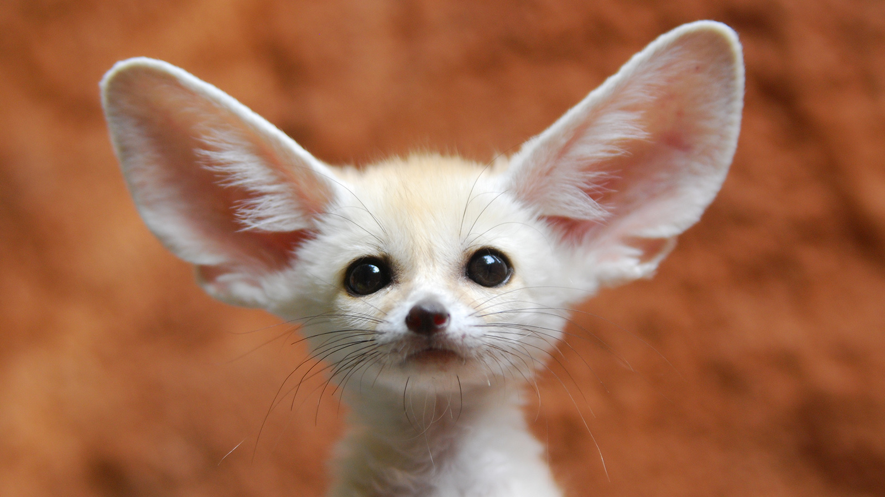

<!-- THEY OFFER CAPTION TO THE PICTURES -->
<figure>
     <br>
    <figcaption>The fennec fox (Vulpes zerda) is a small fox native to the deserts of North Africa, ranging from Western Sahara and Mauritania to the Sinai Peninsula.</figcaption>
</figure>
